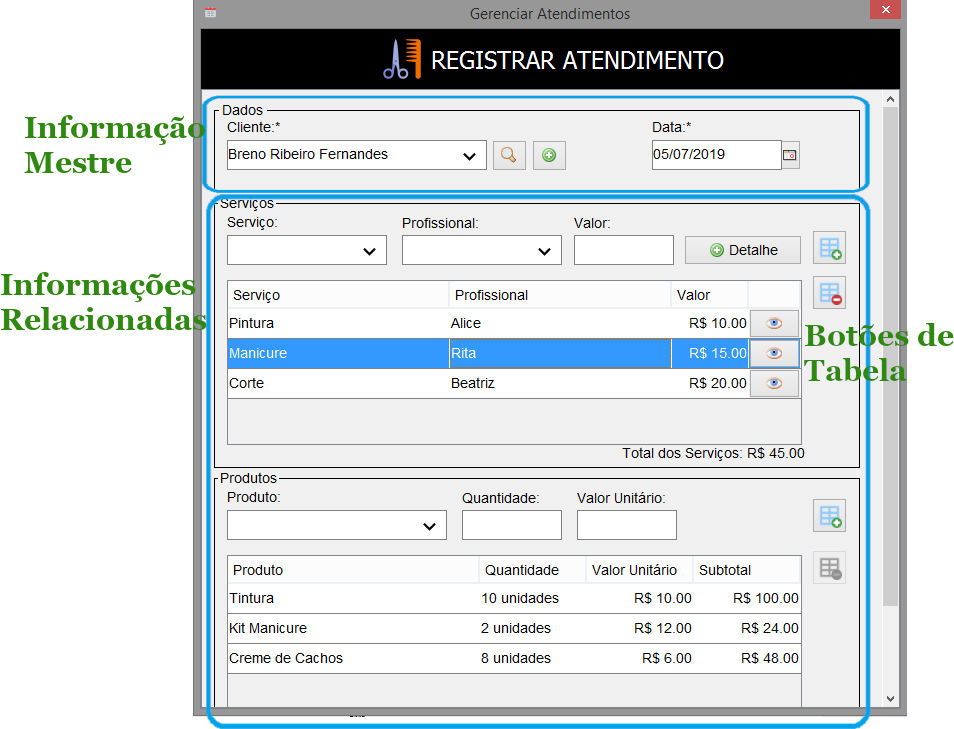

Guia de Estilo
Início
Desktop
(current)
Web
Sobre
Diretrizes Gerais
Layout
Fonte (Letras)
Componentes
Janelas
Formulários
Caixas de Diálogo
Caixas de Mensagem
Modelos de Interface
Login
Tela Principal
CRUD
Pesquisa
• Mestre-Detalhe
Pagamento
Relatório
Gráfico
Diretrizes de Mestre-Detalhe
No fim desta página
, há orientações referentes aos elementos de
Mestre-Detalhe
:

Registro de Atendimento: um possível uso para mestre-detalhe.
O
Mestre-Detalhe
tem a função de associar uma informação-pai a um conjunto de itens variados. Isso é por vezes proveniente de uma ligação M:N em um projeto de banco de dados. Este é uma cenário comum dos softwares, uma vez que objetiva organizar informações de uma determinada ocorrência.
Utilizadas neste exemplo (válidas para DESKTOP e WEB):
Informação Mestre:
este é o objeto da ação que se relaciona a todos os itens listados na tela, representado pelo grupo
Dados
, algumas orientações:
Separe os campos-mestre em um grupo;
Coloque-os no início da tela, para ser facimente identificada a hierarquia das informações.
Informações Relacionadas:
estes são os itens que têm de estar pertencentes ao mestre, algumas orientações:
Separe cada categoria de itens num grupo;
Liste as informações por meio de uma tabela.
Botões de Tabela:
coloque os botões de
Adicionar
e de
Remover
itens perto da tabela:
Lembre-se de manter o botão
Remover
habilitado apenas enquanto alguma linha da tabela estiver selecionada;
Como os botões não têm rótulo, mantenha uma
Dica
, também chamada de
Bolha de Ajuda
, para o usuário saber qual é a função deles.